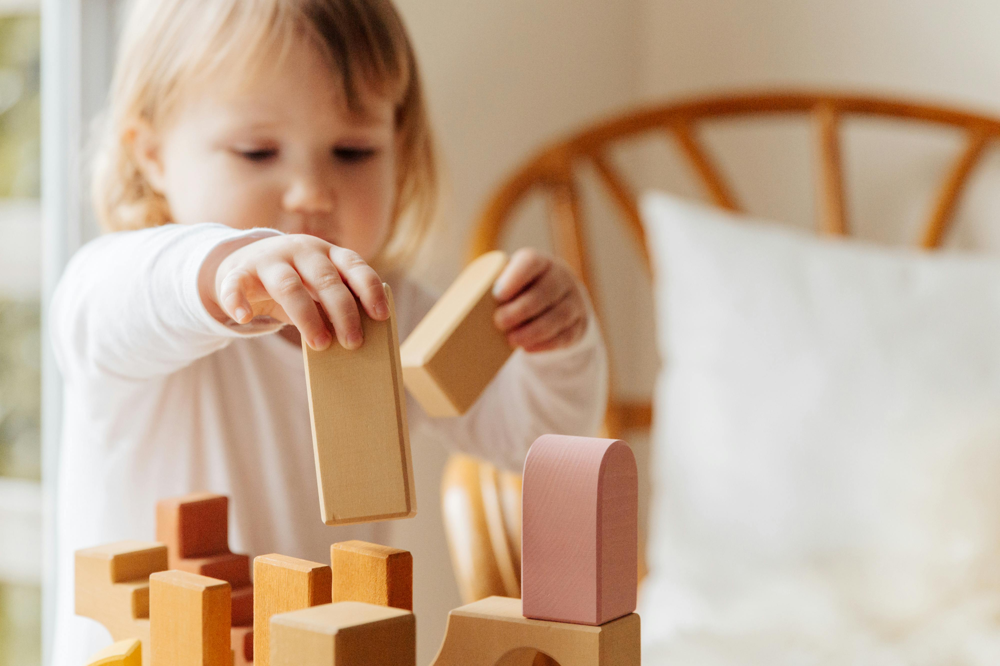
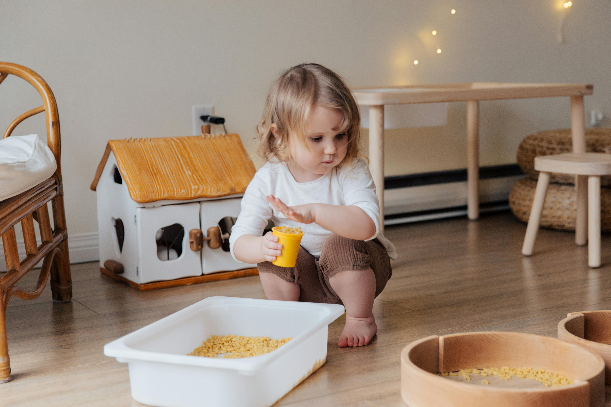
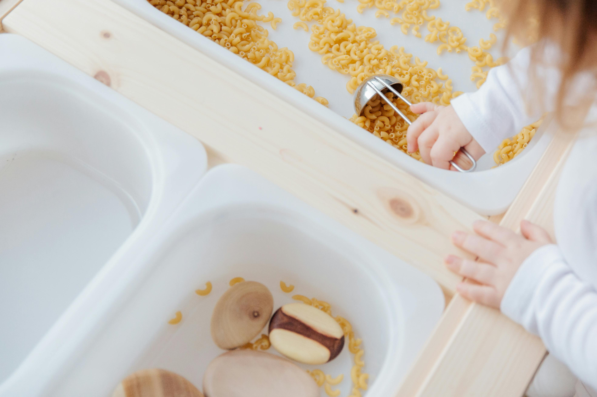

Ahoj, vítej na mém webu. Jmenuji se Veronika a jsem dětskou ergoterapeutkou. Této profesi se věnuji již více jak 7 let a neustále se vzdělávám, abych šla s dobou a mohla vám nabídnout tu nejlepší péči. Mám bohatou praxi zejména v oblasti neurologické, genetické, v oblasti autismu a senzorického zpracování, s dětmi s vývojovou dysfázii, ADHD a s opožděným psychomotorickým vývojem.
Ráda pracuji s dětmi tzv. bez diagnóz, kdy jde zejména o prevenci nebo brzké podchycení případných potíží, ať už v jemné motorice nebo v hrubé motorice, pomocí edukace nejen rodičů ale i učitelů v mateřské školce nebo na prvním stupni základních škol.
A kdo že je to ten dětský ergoterapeut? Jedná se o nelékařskou zdravotnickou profesi. Specializuje se na poskytování terapeutických intervencí dětem s různými vývojovými a neurologickými potížemi. Hlavním cílem je podporovat a rozvíjet schopnosti dítěte v oblasti pohybového, senzorického a sociálního vývoje.
Mezi klíčové aspekty práce patří:
Dětský ergoterapeut pracuje s každým klientem individuálně, s důrazem na celkový rozvoj dítěte a jeho schopností účastnit se běžných každodenních aktivit.
  | s vývojovou poruchou pohybové koordinace |
| s neurologickými diagnózami (dětská mozková obrna,..) |
| s Downovým syndromem a jiné genetické vady |
| se specifickými poruchami učení |
| s vývojovou dysfázií |
| s dyspraxií |
| s opožděným psychomotorickým vývojem |
| s poruchami senzorického zpracování |
| s poruchami autistického spektra |
| se sníženou schopností koncentrace pozornosti a hyperaktivitou |
V rámci mých služeb nabízím online konzultace a poradenství, pro rodiče, blízké pečující osoby, školky nebo školy. Možná osobní konzultace ve vašem domácím prostředí.
| Online konzultace | 30 min | 400 Kč |
| Online konzultace | 60 min | 800 Kč |
| Domácí konzultace | 60 min | 1100 Kč (+ 200 Kč doprava) |
| Individuální konzultace dle předchozí domluvy |